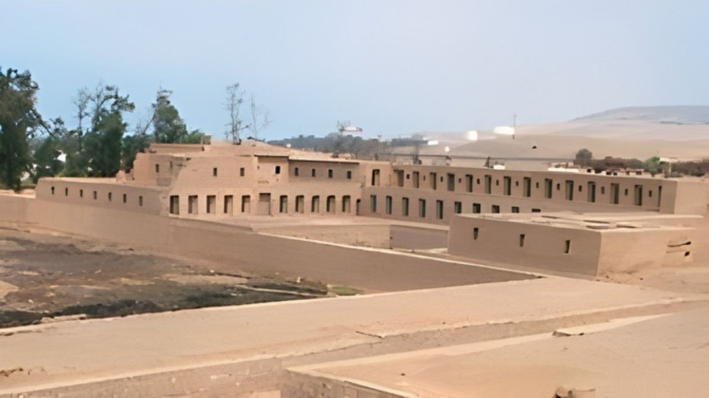
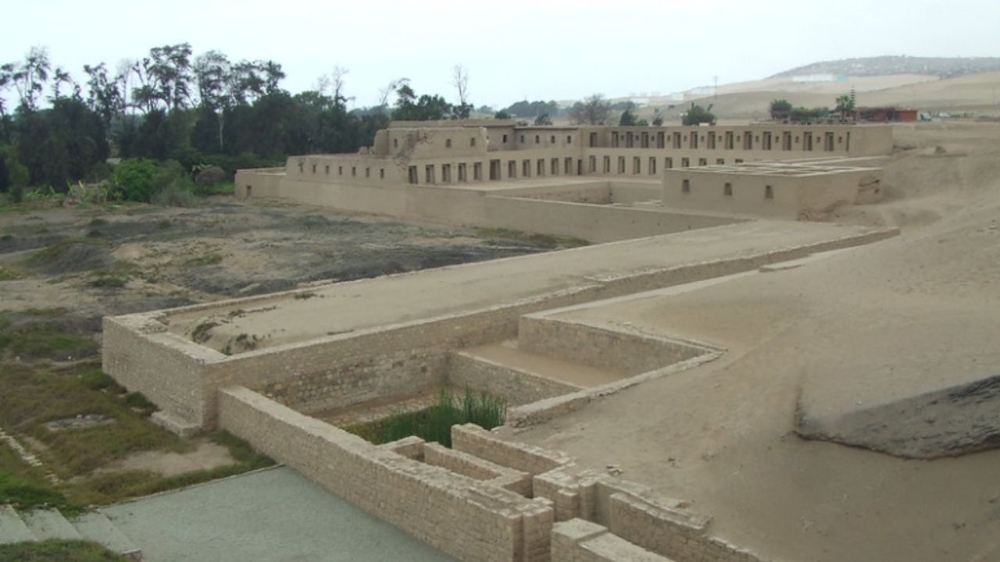
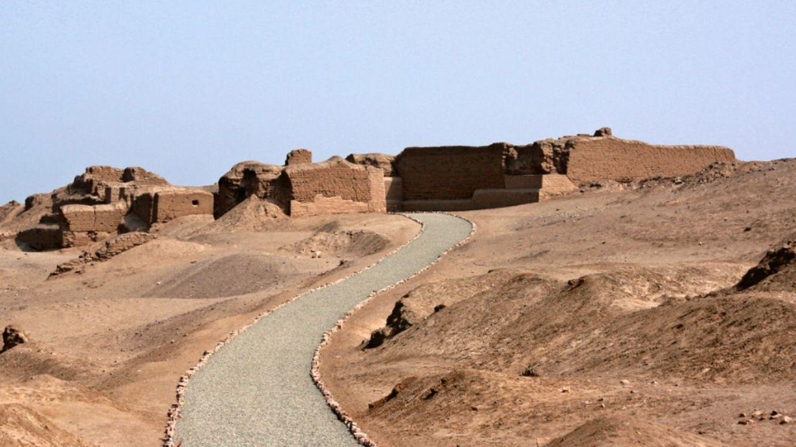

Pachacamac



Una experiencia arqueológica y mística única
Explora Pachacamac: antigua ciudadela, templos piramidales y artefactos sagrados.
Detalle
Embárcate en un tour guiado por Pachacamac, una antigua ciudadela ceremonial venerada por las civilizaciones andinas. El sitio presenta templos piramidales construidos por culturas precolombinas y los Incas. Los puntos destacados incluyen el Templo de Pachacamac, el Santuario del Dios Sol y el Palacio de las Vírgenes del Sol. En el museo, verás un ídolo de la deidad Pachacamac, una vez visible solo para los sumos sacerdotes que interpretaban el oráculo divino. Pachacamac, un sitio místico y sagrado, se creía que era parte del eje espiritual del mundo.
Incluye:
- Transporte privado VIP al aeropuerto de Pisco desde tu hotel en Lima (3 horas)
- Tour guiado VIP de primera clase del geoglifo "El Candelabro" y las Islas Ballestas (2 horas)
- Sobrevuelo Líneas de Nazca (95 minutos)
- Transporte privado VIP de regreso a Lima
- Todo el transporte, tarifas e impuestos
- Guía de habla inglesa/hispana.
No Incluye:
- Extras y propinas.